library(tidyverse)
#> ── Attaching core tidyverse packages ──────────────────────── tidyverse 2.0.0 ──
#> ✔ dplyr 1.2.1 ✔ readr 2.2.0
#> ✔ forcats 1.0.1 ✔ stringr 1.6.0
#> ✔ ggplot2 4.0.3 ✔ tibble 3.3.1
#> ✔ lubridate 1.9.5 ✔ tidyr 1.3.2
#> ✔ purrr 1.2.2
#> ── Conflicts ────────────────────────────────────────── tidyverse_conflicts() ──
#> ✖ dplyr::filter() masks stats::filter()
#> ✖ dplyr::lag() masks stats::lag()
#> ℹ Use the conflicted package (<http://conflicted.r-lib.org/>) to force all conflicts to become errors
library(ggacm) # charge le package
library(gtsummary)
library(ggrepel)
mise_en_place_ACM()
#>
#> ── Les options générales de la session R ont été modifié.
#> ✔ Les nombres décimaux s'afficheront avec une virgule.
#> ── Le thème des tableaux produit par gtsummary a été modifié.
#> ✔ Ils s'afficheront en français.
#> ✔ En utilisant une virgule pour les nombres décimaux.Ceci est un document qui contient le code utilisé pour réaliser des sorties graphiques d’ACM. Pour les phases préalables, où il faut choisir les variables pertinentes de l’analyse et essayer un grand nombre de combinaison de variable,
on aura plutôt recours à Factoshiny::MCAshiny() qui permet d’explorer rapidement les différentes analyses possibles à partir d’un même jeu de données. De manière similaire, explor::explor() fonctionne très bien pour rapidement explorer un résultat.
Le code présenté ici et dans le packages interviennent en général à une phase ultérieure, où l’on cherche à manipuler le résultat de l’analyse pour produire des graphiques, des tableaux, etc.
Le code ci-dessous utilise un style “tidyverse” qui peut être exotique pour certains, notamment dans l’usage du “pipe” (|>). Pour plus de détails là-dessus, voir la section dédiée du guide de Julien Barnier.
La production de graphique d’analyse des correspondances multiples demande un certain contrôle sur les dimensions des graphiques produits. Pour cela, il est souvent plus facile de passer par des fichiers Quarto ou R-markdown pour produire les graphiques, en précisant les dimensions des graphiques d’output des cellules de codes. Pour une présentation rapide de ce type de fichier, voir la section de R for Data Science ou la très pédagogique introduction d’Elisabeth Morand et Benédicte Garnier de l’INED .
Si ce n’est pas déjà fait, il va falloir installer les packages qui sont utilisés, dont mon package. N’étant disponible que sur Github, la meilleure manière de l’installer est de faire pak::pak("nicolasville/ggacm) (ce qui nécessite l’installation du package pak auparavant avec install.packages("pak")).
On commence par charger les packages qui vont être utilisé.
Le jeu de donnée du package questionr qui correspond à un extrait de l’enquête Histoire de Vie de l’INSEE en 2003 sera utilisé en exemple ici. Plus précisément seules certaines colonnes relatives à certaines pratiques sont gardées.
data("hdv2003", package = "questionr") # charge les données en mémoire
hdv2003 <- hdv2003 |>
select(id,
sexe,
cuisine,
bricol,
cinema,
relig,
sport) |> # sélectionne les colonnes id, genre et de hard.rock à sport
tibble()
hdv2003
#> # A tibble: 2.000 × 7
#> id sexe cuisine bricol cinema relig sport
#> <int> <fct> <fct> <fct> <fct> <fct> <fct>
#> 1 1 Femme Oui Non Non Ni croyance ni appartenance Non
#> 2 2 Femme Non Non Oui Ni croyance ni appartenance Oui
#> 3 3 Homme Non Non Non Ni croyance ni appartenance Oui
#> 4 4 Homme Oui Oui Oui Appartenance sans pratique Oui
#> 5 5 Femme Non Non Non Pratiquant regulier Non
#> 6 6 Femme Non Non Oui Ni croyance ni appartenance Oui
#> 7 7 Femme Oui Non Non Appartenance sans pratique Non
#> 8 8 Homme Oui Oui Non Ni croyance ni appartenance Non
#> 9 9 Femme Non Non Oui Appartenance sans pratique Non
#> 10 10 Homme Non Non Oui Pratiquant occasionnel Oui
#> # ℹ 1.990 more rowsPour se donner une idée du jeu de donnée :
hdv2003 |>
tbl_summary(include = -id) # toutes les variables sauf l'identifiant| Caractéristique | N = 2 0001 |
|---|---|
| sexe | |
| Homme | 899 (45%) |
| Femme | 1 101 (55%) |
| cuisine | |
| Non | 1 119 (56%) |
| Oui | 881 (44%) |
| bricol | |
| Non | 1 147 (57%) |
| Oui | 853 (43%) |
| cinema | |
| Non | 1 174 (59%) |
| Oui | 826 (41%) |
| relig | |
| Pratiquant regulier | 266 (13%) |
| Pratiquant occasionnel | 442 (22%) |
| Appartenance sans pratique | 760 (38%) |
| Ni croyance ni appartenance | 399 (20%) |
| Rejet | 93 (4,7%) |
| NSP ou NVPR | 40 (2,0%) |
| sport | |
| Non | 1 277 (64%) |
| Oui | 723 (36%) |
| 1 n (%) | |
Préparations
Une partie des modalités sont identiques entre variable (“Oui”/“Non”). Pour rendre les sorties plus lisbiles, je les recode pour qu’elles soient toutes différentes et plus claires. (L’IA génère bien ces recodages en général)
hdv2003 <- hdv2003 |>
mutate(
cuisine = cuisine |>
fct_recode(
"Fait de la cuisine" = "Oui",
"Ne fait pas de cuisine" = "Non"
),
bricol = bricol |>
fct_recode(
"Bricole" = "Oui",
"Ne bricole pas" = "Non"
),
cinema = cinema |>
fct_recode(
"Va au cinéma" = "Oui",
"Ne va pas au cinéma" = "Non"
),
sport = sport |>
fct_recode(
"Pratique un sport" = "Oui",
"Ne pratique pas de sport" = "Non"
)
)
hdv2003
#> # A tibble: 2.000 × 7
#> id sexe cuisine bricol cinema relig sport
#> <int> <fct> <fct> <fct> <fct> <fct> <fct>
#> 1 1 Femme Fait de la cuisine Ne bricole pas Ne va pas au c… Ni c… Ne p…
#> 2 2 Femme Ne fait pas de cuisine Ne bricole pas Va au cinéma Ni c… Prat…
#> 3 3 Homme Ne fait pas de cuisine Ne bricole pas Ne va pas au c… Ni c… Prat…
#> 4 4 Homme Fait de la cuisine Bricole Va au cinéma Appa… Prat…
#> 5 5 Femme Ne fait pas de cuisine Ne bricole pas Ne va pas au c… Prat… Ne p…
#> 6 6 Femme Ne fait pas de cuisine Ne bricole pas Va au cinéma Ni c… Prat…
#> 7 7 Femme Fait de la cuisine Ne bricole pas Ne va pas au c… Appa… Ne p…
#> 8 8 Homme Fait de la cuisine Bricole Ne va pas au c… Ni c… Ne p…
#> 9 9 Femme Ne fait pas de cuisine Ne bricole pas Va au cinéma Appa… Ne p…
#> 10 10 Homme Ne fait pas de cuisine Ne bricole pas Va au cinéma Prat… Prat…
#> # ℹ 1.990 more rowsOn sélectionne ensuite les variables supplémentaires…
… et actives
On peut maintenant faire l’ACM avec FactoMineR::MCA, en précisant les variables supplémentaires dans l’argument quali.sup. On stocke le résultat dans l’objet res_acm pour y avoir accès pour plus tard.
res_acm <- hdv2003 |>
FactoMineR::MCA(quali.sup = variables_supplémentaires)
#> Warning in sqrt(Nj * ((N - 1)/(N - Nj))): Production de NaNOn peut maintenant décrire les axes. Les taux modifiés de Benzécri peuvent se calculer avec modif.rate() du package GDAtools.
ggacm::extraire_variance(res_acm)
#> Axes Valeurs propres % de variance % cumulé de variance
#> 1 Axe 1 0,30 16,7 % 16,7 %
#> 2 Axe 2 0,21 11,8 % 28,5 %
#> 3 Axe 3 0,20 11,3 % 39,8 %
#> 4 Axe 4 0,20 11,2 % 50,9 %
#> 5 Axe 5 0,20 11,1 % 62 %
GDAtools::modif.rate(res_acm)$modif
#> mrate cum.mrate
#> dim 1 98,32789 98,3
#> dim 2 1,57169 99,9
#> dim 3 0,09435 100,0
#> dim 4 0,00607 100,0Description des axes
La description des axes ce fait comme ceci :
Axe 1
caracteriser_axe(res_acm, 1)
#> Vous n'axez pas indiqué de contribution minimum pour afficher les résultats
#> Seules les modalités dont la contribution est supérieur à la moyenne théorique
#> seront affichées.
#> ℹ Si vous souhaitez modifier cela, vous pouvez changer l'argument
#> contribution_minimum
#> → `contribution_minimum = 0` si vous souhaitez afficher toutes les modalités
#> par exemple
#>
#>
#> ── Contribution moyenne théorique
#>
#> ℹ Si toutes les modalités actives contribuaient également à la construction
#> d'un axe, chacune aurait une contribution de Inf %.
tr
| Modalité1 | Contribution | Coordonnée2 | Cos² | V-test | Effectif |
|---|---|---|---|---|---|
| Table has no data | |||||
| 1 Seules les modalités actives dont la contribution est supérieure à Inf % sont représentées. | |||||
| 2 Moyenne des coordonnées des individus partageant la modalité | |||||
Axe 2
caracteriser_axe(res_acm, 2)
#> Vous n'axez pas indiqué de contribution minimum pour afficher les résultats
#> Seules les modalités dont la contribution est supérieur à la moyenne théorique
#> seront affichées.
#> ℹ Si vous souhaitez modifier cela, vous pouvez changer l'argument
#> contribution_minimum
#> → `contribution_minimum = 0` si vous souhaitez afficher toutes les modalités
#> par exemple
#>
#>
#> ── Contribution moyenne théorique
#>
#> ℹ Si toutes les modalités actives contribuaient également à la construction
#> d'un axe, chacune aurait une contribution de Inf %.
tr
| Modalité1 | Contribution | Coordonnée2 | Cos² | V-test | Effectif |
|---|---|---|---|---|---|
| Table has no data | |||||
| 1 Seules les modalités actives dont la contribution est supérieure à Inf % sont représentées. | |||||
| 2 Moyenne des coordonnées des individus partageant la modalité | |||||
Axe 3
caracteriser_axe(res_acm, 3, contribution_minimum = 3)| Modalité1 | Contribution | Coordonnée2 | Cos² | V-test | Effectif |
|---|---|---|---|---|---|
| Coordonnées positives | |||||
| Pratiquant regulier | 13,3 % | 1,007 | 0,156 | 17,6 | 266 (13 %) |
| Rejet | 12,7 % | 1,666 | 0,135 | 16,5 | 93 (5 %) |
| Ne bricole pas | 4,9 % | 0,294 | 0,116 | 15,3 | 1147 (57 %) |
| Coordonnées négatives | |||||
| Ni croyance ni appartenance | 48,3 % | -1,568 | 0,613 | -35,0 | 399 (20 %) |
| Bricole | 6,6 % | -0,396 | 0,116 | -15,3 | 853 (43 %) |
| 1 Seules les modalités actives dont la contribution est supérieure à 3 % sont représentées. | |||||
| 2 Moyenne des coordonnées des individus partageant la modalité | |||||
Axe 4
caracteriser_axe(res_acm, 4)
#> Vous n'axez pas indiqué de contribution minimum pour afficher les résultats
#> Seules les modalités dont la contribution est supérieur à la moyenne théorique
#> seront affichées.
#> ℹ Si vous souhaitez modifier cela, vous pouvez changer l'argument
#> contribution_minimum
#> → `contribution_minimum = 0` si vous souhaitez afficher toutes les modalités
#> par exemple
#>
#>
#> ── Contribution moyenne théorique
#>
#> ℹ Si toutes les modalités actives contribuaient également à la construction
#> d'un axe, chacune aurait une contribution de Inf %.
tr
| Modalité1 | Contribution | Coordonnée2 | Cos² | V-test | Effectif |
|---|---|---|---|---|---|
| Table has no data | |||||
| 1 Seules les modalités actives dont la contribution est supérieure à Inf % sont représentées. | |||||
| 2 Moyenne des coordonnées des individus partageant la modalité | |||||
Pour la suite et pour faire les graphiques, il est intéressant de disposer des données “augmentées” des résultats de l’ACM. L’analyse a produit pour chaque individus une série de coordonnées (sur l’axe 1, 2, 3…), de contributions ( à l’axe 1, 2, 3…), de distance en cos², etc. La fonction extraire_individus() extrait du résultat, notre tableau d’entrée auquel on a rajouté, pour chaque individus les données mentionnées.
Les colonnes contenant les coordonnées sur l’axe 1 et 2 sont mises en début de tableau, parce que ce sont les plus utilisées. (Ce n’est que cosmétique, le reste des coordonnées, contributions, etc. reste accessible).
On stocke ce tableau dans un objet individus.
individus <- res_acm |> extraire_individus()
individus
#> # A tibble: 2.000 × 22
#> dim1_coord dim2_coord id sexe cuisine bricol cinema relig sport
#> <dbl> <dbl> <int> <fct> <fct> <fct> <fct> <fct> <fct>
#> 1 -0.308 0.152 1 Femme Fait de la cuisi… Ne br… Ne va… Ni c… Ne p…
#> 2 0.526 -0.576 2 Femme Ne fait pas de c… Ne br… Va au… Ni c… Prat…
#> 3 -0.00599 -0.446 3 Homme Ne fait pas de c… Ne br… Ne va… Ni c… Prat…
#> 4 1.06 0.0914 4 Homme Fait de la cuisi… Brico… Va au… Appa… Prat…
#> 5 -0.932 -0.348 5 Femme Ne fait pas de c… Ne br… Ne va… Prat… Ne p…
#> 6 0.526 -0.576 6 Femme Ne fait pas de c… Ne br… Va au… Ni c… Prat…
#> 7 -0.389 0.178 7 Femme Fait de la cuisi… Ne br… Ne va… Appa… Ne p…
#> 8 0.0619 0.239 8 Homme Fait de la cuisi… Brico… Ne va… Ni c… Ne p…
#> 9 -0.0985 -0.507 9 Femme Ne fait pas de c… Ne br… Va au… Appa… Ne p…
#> 10 0.312 0.213 10 Homme Ne fait pas de c… Ne br… Va au… Prat… Prat…
#> # ℹ 1.990 more rows
#> # ℹ 13 more variables: dim3_coord <dbl>, dim4_coord <dbl>, dim5_coord <dbl>,
#> # dim1_contrib <dbl>, dim2_contrib <dbl>, dim3_contrib <dbl>,
#> # dim4_contrib <dbl>, dim5_contrib <dbl>, dim1_cos2 <dbl>, dim2_cos2 <dbl>,
#> # dim3_cos2 <dbl>, dim4_cos2 <dbl>, dim5_cos2 <dbl>On peut faire de même pour les modalités en produisant un tableau récapitulatif des modalités avec extraire_modalites(). Ce tableau inclut le type de variable (active ou supplémentaire), le nom de la variable, le nom de la modalité, son effectif en nombre et en pourcentage, ainsi que ses coordonnées sur les différents axes, sa contribution à chaque axe, etc.
modalités <- res_acm |> extraire_modalites()
modalités
#> # A tibble: 16 × 25
#> type variables modalites n pourcentage dim1_coord dim1_contrib dim1_cos2
#> <chr> <chr> <chr> <int> <dbl> <dbl> <dbl> <dbl>
#> 1 Vari… cuisine Ne fait … 1119 56 -0.291 3.16 0.108
#> 2 Vari… cuisine Fait de … 881 44 0.370 4.02 0.108
#> 3 Vari… bricol Ne brico… 1147 57.4 -0.432 7.12 0.251
#> 4 Vari… bricol Bricole 853 42.6 0.580 9.58 0.251
#> 5 Vari… cinema Ne va pa… 1174 58.7 -0.602 14.2 0.515
#> 6 Vari… cinema Va au ci… 826 41.3 0.855 20.1 0.515
#> 7 Vari… relig Pratiqua… 266 13.3 -0.689 4.21 0.0729
#> 8 Vari… relig Pratiqua… 442 22.1 -0.227 0.761 0.0147
#> 9 Vari… relig Apparten… 760 38 0.136 0.465 0.0113
#> 10 Vari… relig Ni croya… 399 20 0.359 1.71 0.0321
#> 11 Vari… relig Rejet 93 4.7 0.436 0.590 0.00929
#> 12 Vari… relig NSP ou N… 40 2 -0.0723 0.00697 0.000107
#> 13 Vari… sport Ne prati… 1277 63.9 -0.538 12.3 0.511
#> 14 Vari… sport Pratique… 723 36.1 0.950 21.7 0.511
#> 15 Vari… sexe Homme 899 45 0.106 NA 0.00917
#> 16 Vari… sexe Femme 1101 55 -0.0865 NA 0.00917
#> # ℹ 17 more variables: dim1_vtest <dbl>, dim2_coord <dbl>, dim2_contrib <dbl>,
#> # dim2_cos2 <dbl>, dim2_vtest <dbl>, dim3_coord <dbl>, dim3_contrib <dbl>,
#> # dim3_cos2 <dbl>, dim3_vtest <dbl>, dim4_coord <dbl>, dim4_contrib <dbl>,
#> # dim4_cos2 <dbl>, dim4_vtest <dbl>, dim5_coord <dbl>, dim5_contrib <dbl>,
#> # dim5_cos2 <dbl>, dim5_vtest <dbl>Le grand intérêt de ces tableaux est d’être facilement utilisable par l’extension ggplot2 qui permet de générer soi-même ses graphiques sur-mesure. Pour une plus de détails, voir la section dédiée du guide de Julien Barnier, celle du guide de Larmarange ou encore la très pédagogique présentation qui est fait dans R for Data Science.
Pour des détails plus complet, on pourra se référer au manuel de l’extension.
Graphique des modalités
Pour faire le graphique on utilise ggplot() directement sur le tableau des modalités avec les variables dim1_coord et dim2_coord qui stockent les coordonnées des modalités.
Ici, ggplot() initialise le graphique avec les coordonnées. geom_point() place les points et geom_text_repel() met le texte. On utilise geom_text_repel() et pas geom_text() parce que geom_text() mettrait le texte directement sur les points. L’argument labelindique la colonne du tableau qui contient le texte à afficher.
modalités |>
ggplot(aes(
x = dim1_coord,
y = dim2_coord
)
) +
geom_point() +
geom_text_repel(aes(label = modalites))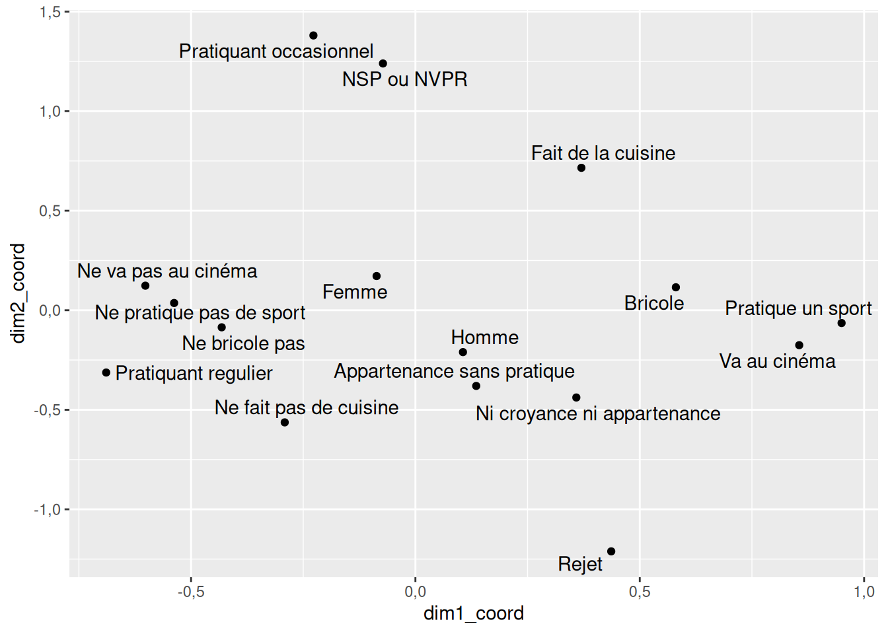
Cela peut être assez long à taper à la longue. La fonction ggacm()
simplifie la production de graphiques, en plus de représenter les cadrans et de rendre l’échelle de grandeur des abcsisses et des ordonnées identiques.
modalités |>
ggacm() + # <- Initialise le graphique d'un coup
geom_point() +
geom_text_repel(aes(label = modalites)) 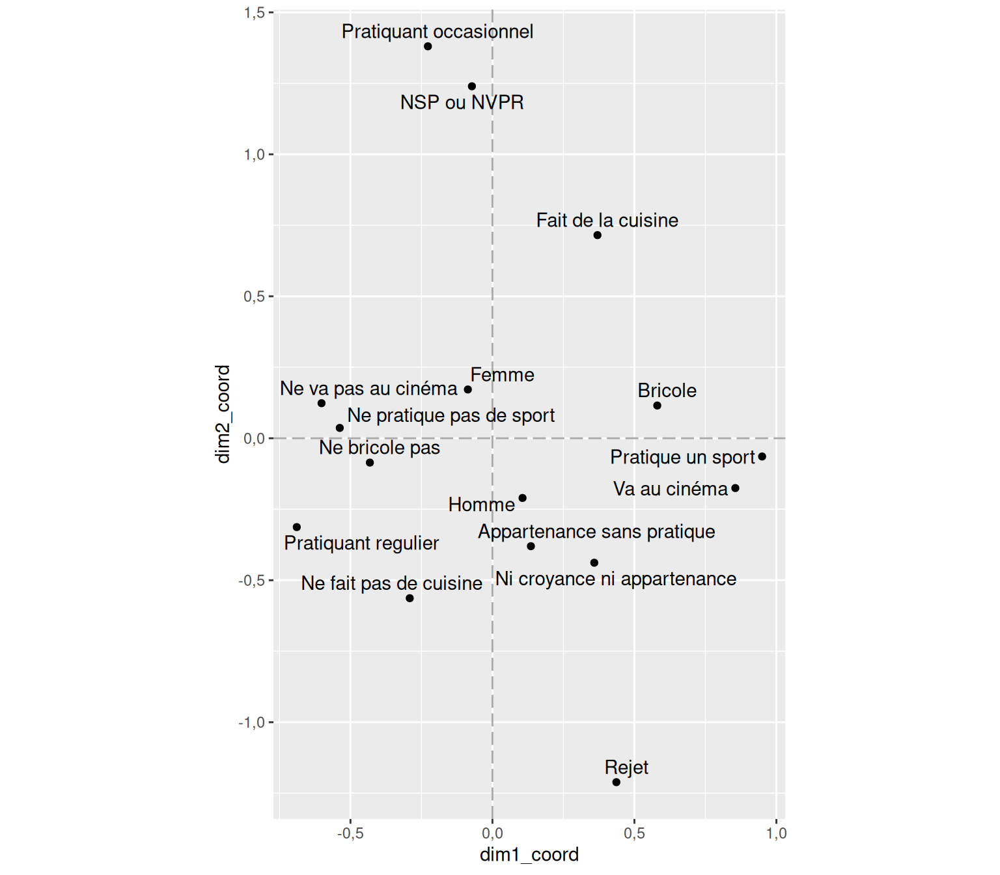
Voici le graphique “brut”. Souvent, des modalités n’ont pas assez de place pour s’afficher, sont écrites trop grosses ou autres.
Dans quarto, on peut préciser dans le bloc de code la taille du graphique qui sera produit avec #| fig-height: et #| fig-height: qui fixent les dimensions (en pouce). En fonction des ACM, il faut essayer différentes valeurs pour voir ce qui fonctionne le mieux. Les graphiques que vous voyez utilisent
#| fig-height: 7
#| fig-width: 8
Code_qui_génère_un_graphiqueJusqu’ici, toutes les variables ont été affiché sur les graphiques. Or, souvent, on fait la différence entre les variables supplémentaires et actives. Si on veut, on peut faire des graphiques différents. Par exemple, ici ne sont affichés que les variables actives (on filtre le tableau des modalités avant de l’injecter dans le graphique)
modalités |>
filter(type == "Variable active") |> # <- on ne garde que les variables actives
ggacm() +
geom_point() +
geom_text_repel(aes(label = modalites)) 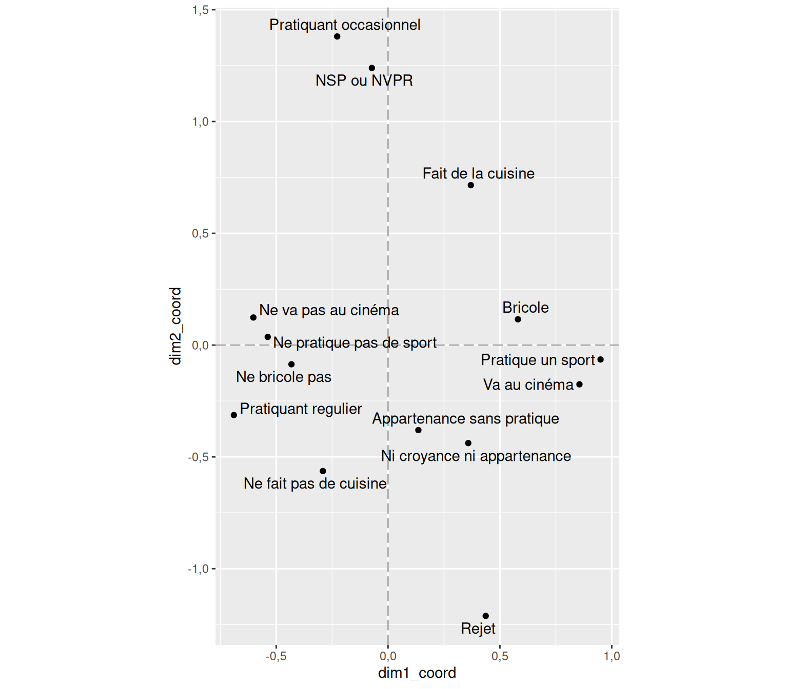
On peut aussi donner une forme différente au variables active et supplémentaire. Ici, aes(shape = type) indique à ggplot de donner une forme différente aux points en fonction du type de la modalité (active ou supplémentaire). Pour plus de détails sur ce qu’il est possible de faire, voir la section du manuel de ggplot.
modalités |>
ggacm() +
geom_point(aes(shape = type)) +
geom_text_repel(aes(label = modalites)) 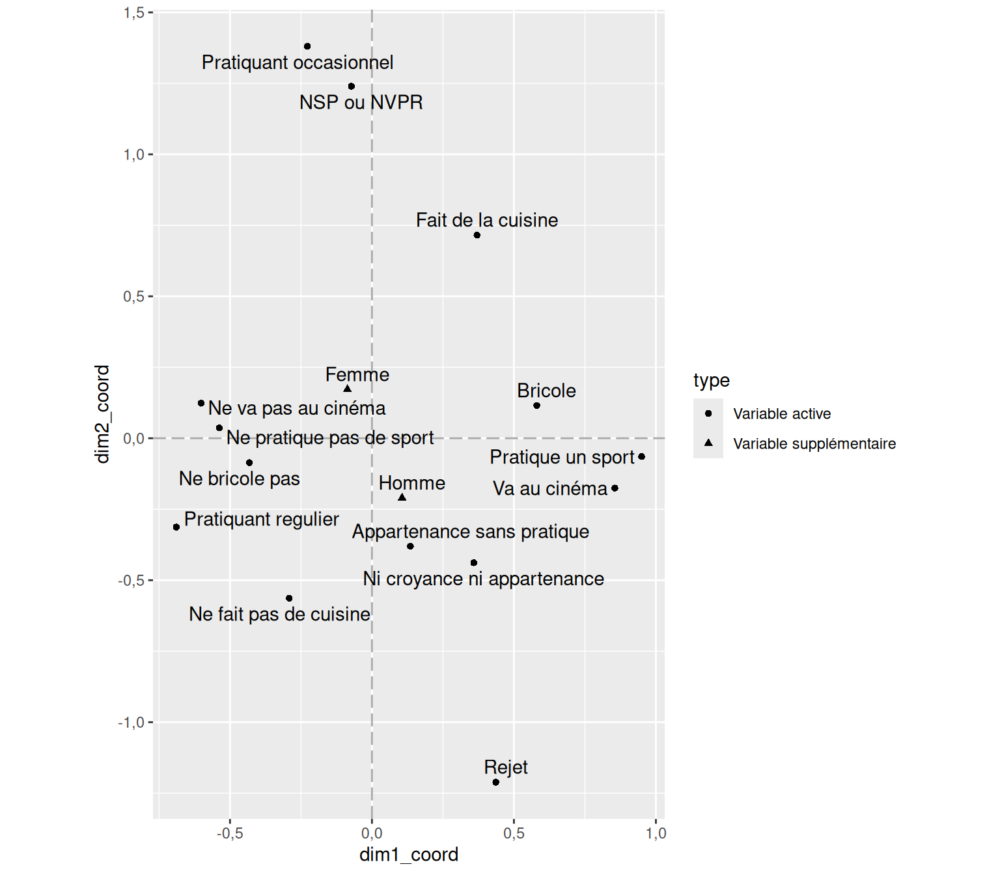
Décorer ses graphiques
Voilà pour le graphique des modalités. On peut maintenant rajouter un certain nombre de chose pour l’améliorer.
Je vais le stocker dans un objet graph pour commencer et éviter de retaper toutes les commandes à chaque fois.
graph <- modalités |>
ggacm() +
geom_point() +
geom_text_repel(aes(label = modalites)) Cet objet est un graphique et on peut lui ajouter des éléments avec + comme une légende ou un titre avec la fonction labs(). Cette fonction permet également de renommer les axes.
graph +
labs(
title = "ACM des pratiques culturelles",
caption = "Réalisé à partir de l'enquête Histoire de Vie 2003 de l'INSEE.",
x = "L'axe 1"
)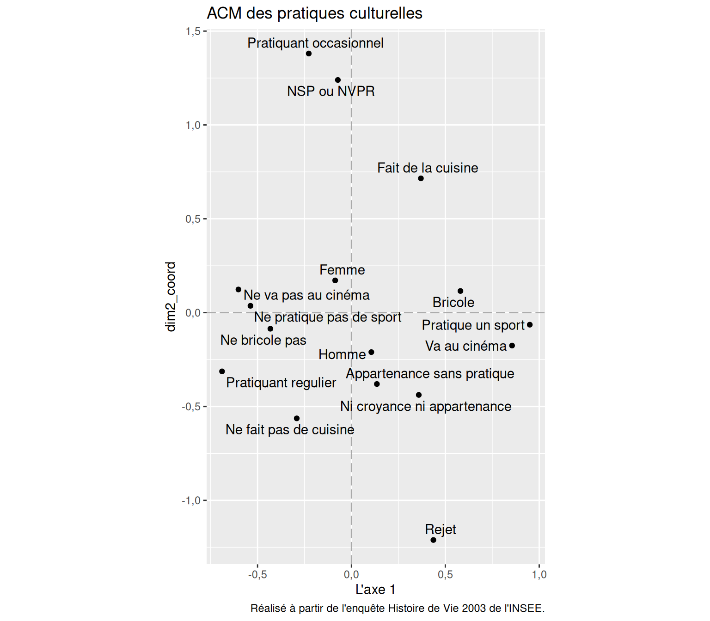
Le nom des axes est assez important dans les graphiques d’analyse des correspondances. On aura tendance à les réutiliser dans tous les graphiques. Pour plus d’ergonomie, il est possible de stocker les intitulés des axes dans un objet qu’on rajoutera systématiquement au graphique. La fonction nommer_axes() aide à générer ces intitulés.
axes <- nommer_axes(res_acm,
a_gauche = "Ne pratique pas",
a_droite = "Cumule de pratique",
en_haut = "Chasse/pêche")
graph + axes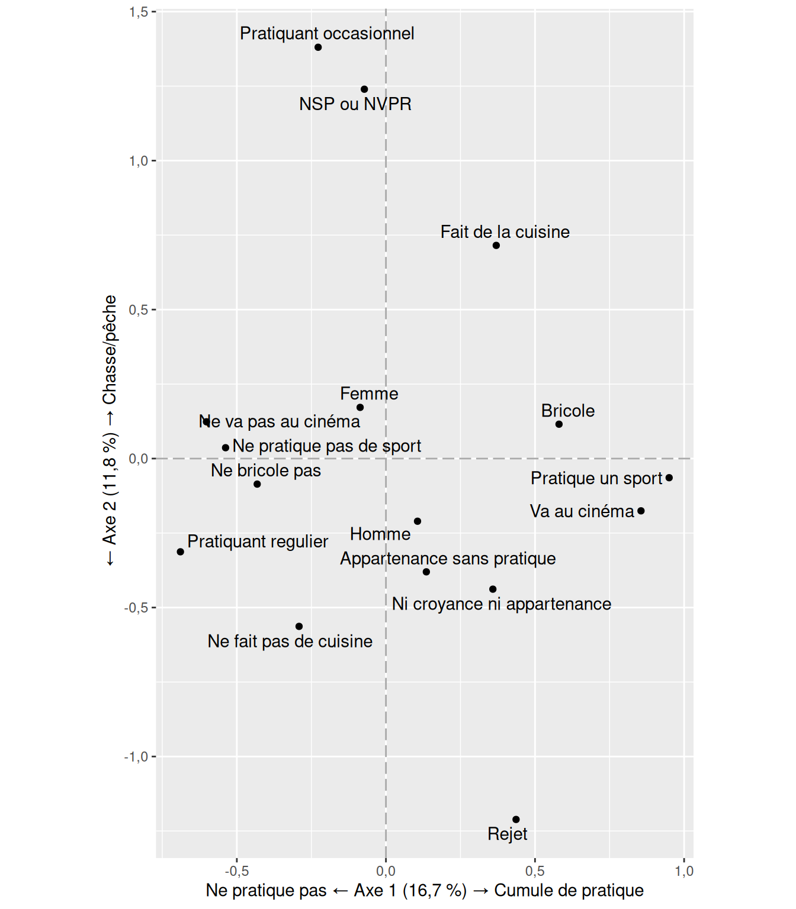
On peut également changer le thème esthétique du graphique. J’ai mis mes préférences dans la fonction theme_acm() mais on peut en utiliser d’autres : voir sur le site du package ggplot2.
graph + theme_acm()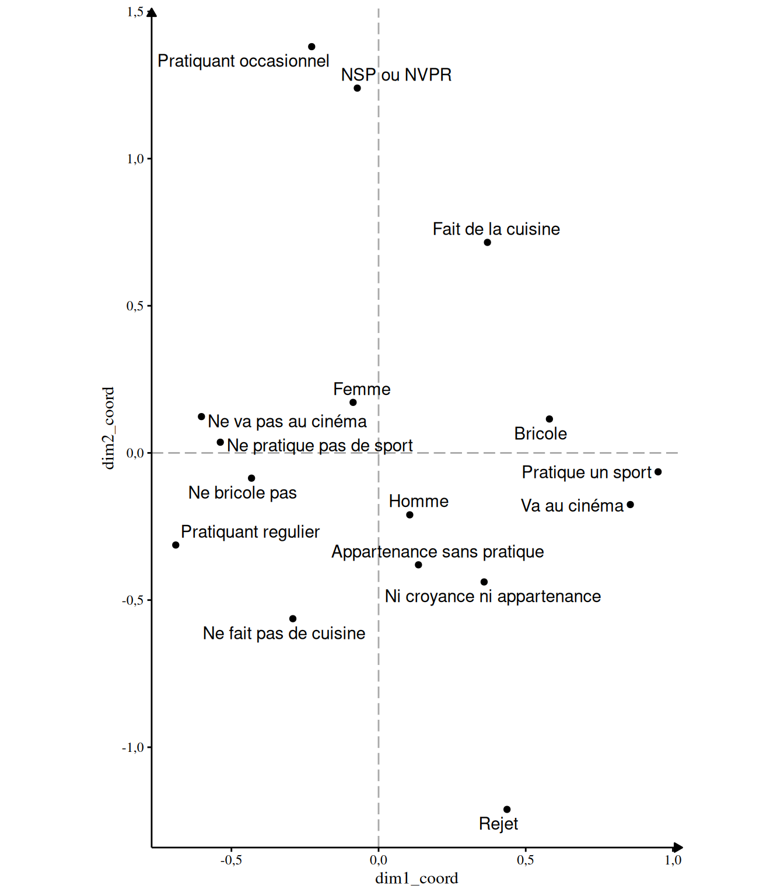
Ajouter d’autres variables
On peut également rajouter d’autres “variables au graphique”. Pour cela, il faut revenir à l’expression de base. Dans l’exemple suivant je modifie la taille des points en fonction des effectifs en ajoutant aes(size = n) dans la fonction qui trace les points. n est le nom de la colonne du tableau de modalités qui contient les effectifs :
modalités |>
ggacm() +
geom_point(aes(size = n)) + # <------
geom_text_repel(aes(label = modalites)) +
theme_acm() +
axes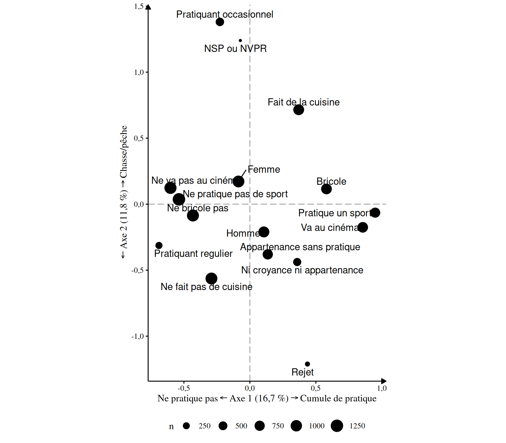
Représenter un troisième axe
On peut de manière similaire ajouter à la représentation une échelle de couleur en fonction des coordonnées sur l’axe 3.
modalités |>
ggacm() +
aes(color = dim3_coord)+
geom_point() +
geom_text_repel(aes(label = modalites)) +
theme_acm() +
axes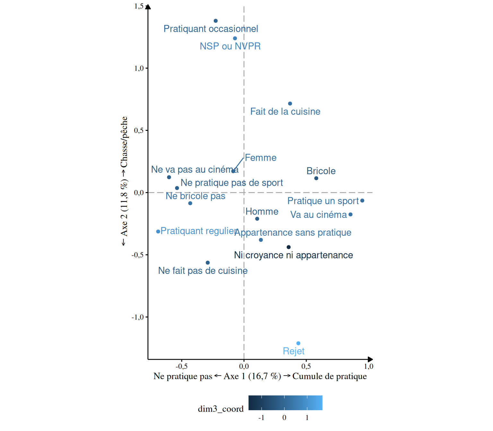
L’échelle de couleur n’est pas très adapté aux coordonnées d’une ACM, on doit donc la changer pour une échelle divergente de couleur. Ce que l’on peut faire avec scale_color_gradient2().
Ici, je vais stocker dans un objet la liste des spécifications de cette échelle dans un objet que je vais appeler couleurs.
L’argument oob = scales::squish permet de faire en sorte que les points qui ne sont pas dans les limites de l’échelle (à moins de -0,5 ou plus de 0,5) soient considérés pour la couleur comme comme étant égal à -0,5 et 0,5. Cela évite qu’ils finissent gris. Pour plus de détails sur les couleurs dans ggplot2, voir la section dédiée du manuel.
La fonction labs() permet de rajouter un description de l’axe en couleur, qu’on pourra changer pour ajouter le taux de variance par exemple.
Les spécifications de la fonction theme() servent à bien placer la légendes des couleurs sur le graphique (en bas du graphique, avec le titre centré, etc. )
couleurs <- list(
scale_color_gradient2(
high = "red", # couleur des coordonnées positives
low = "blue", # couleur des coordonnées négatives
midpoint = 0, # milieu de l'échelle
mid = "grey20", # couleur au milieu (ici 0)
limits = c(-0.5, 0.5), # limites de l'échelle
oob = scales::squish
),
labs(
color = str_glue("... ← Axe 3 → ...") # intitulé de l'axe 3
),
theme(legend.position = "bottom",
legend.key.width = unit(2,"cm"),
legend.key.height = unit(0.2, "cm"),
legend.title.position = "top",
legend.title = element_text(hjust = 0.5),
legend.justification = "center")
)On peut maintenant réessayer avec la couleur :
modalités |>
ggacm() +
aes(color = dim3_coord)+
geom_point() +
geom_text_repel(aes(label = modalites)) +
theme_acm() +
axes +
couleurs # <- les spécifications de l'échelle de couleur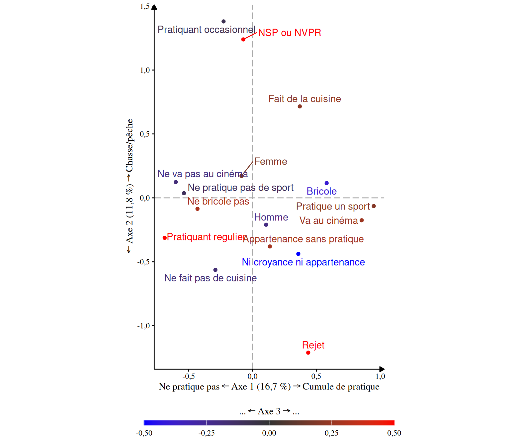
Graphique des individus
Pour réaliser les graphiques des individus, la même logique s’applique : on initialise le graphique avec ggacm(), puis on ajoute, couche après couche, ce dont on a besoin. A cela près qu’on travaille non plus sur le tableau des modalites, mais celui des individus.
On peut donc répéter le code plus haut. Au vu du nombre d’individus, il n’est pas utile d’afficher leurs identifiants. Toutefois, s’ils étaient moins nombreux on pourrait ajouter la même couche qu’on a utilisé pour le texte des modalités en changeant ne nom de la colonne pour le texte qu’on souhaite afficher. Par exemple si l’on voulait afficher l’identifiant des individus, on rajouterait : geom_text_repel(aes(label = id)).
individus |>
ggacm() +
aes(color = dim3_coord)+
geom_point() +
theme_acm() +
axes +
couleurs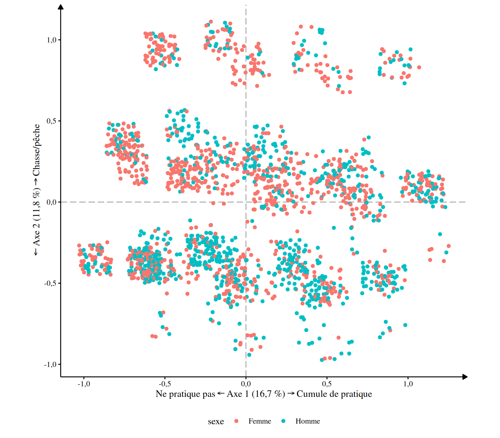
Ici, on remarque qu’on a pas exactement les 2000 points promis par les individus les points sont concentrés… à certains points. L’ACM ayant été réalisée sur un petit nombre de variable, les individus qui ont répondu de manière identique au questionnaire sont placés au même endroit.
Dans ces cas là, pour se rendre un peu mieux compte du nombre, on peut introduire un peu de bruit artificiel dans les points. On remplace geom_point() par geom_jitter() en précisant par exemple ici qu’on souhaite une variation de 0.1 unité dans les deux directions. Les points seront alors placés aléatoirement dans un carré de 0.1 sur 0.1 autour de leurs coordonnées.
individus |>
ggacm() +
aes(color = dim3_coord)+
geom_jitter(height = 0.1, width = 0.1) +
theme_acm() +
axes +
couleurs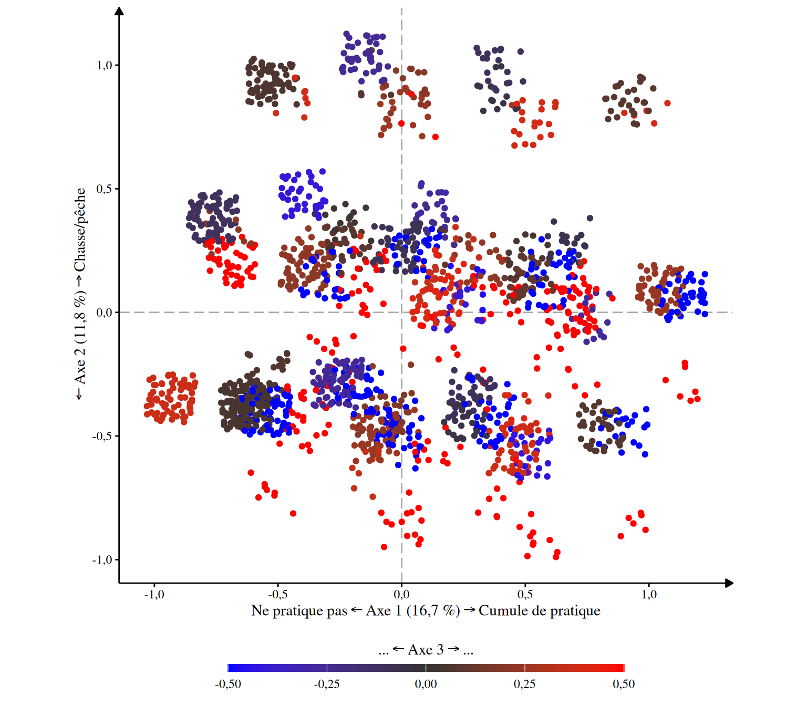
Colorer le nuage d’individus
On a déjà vu comment colorer le nuage selon les coordonnées sur l’axe 3. Rien ne nous empêche cependant d’utiliser la couleur pour autre chose. Comme par exemple pour observer la répartition d’une variable dans le nuage des individus.
individus |>
ggacm() +
aes(color = sexe) + # <------
geom_jitter(height = 0.1, width = 0.1) +
theme_acm() +
axes 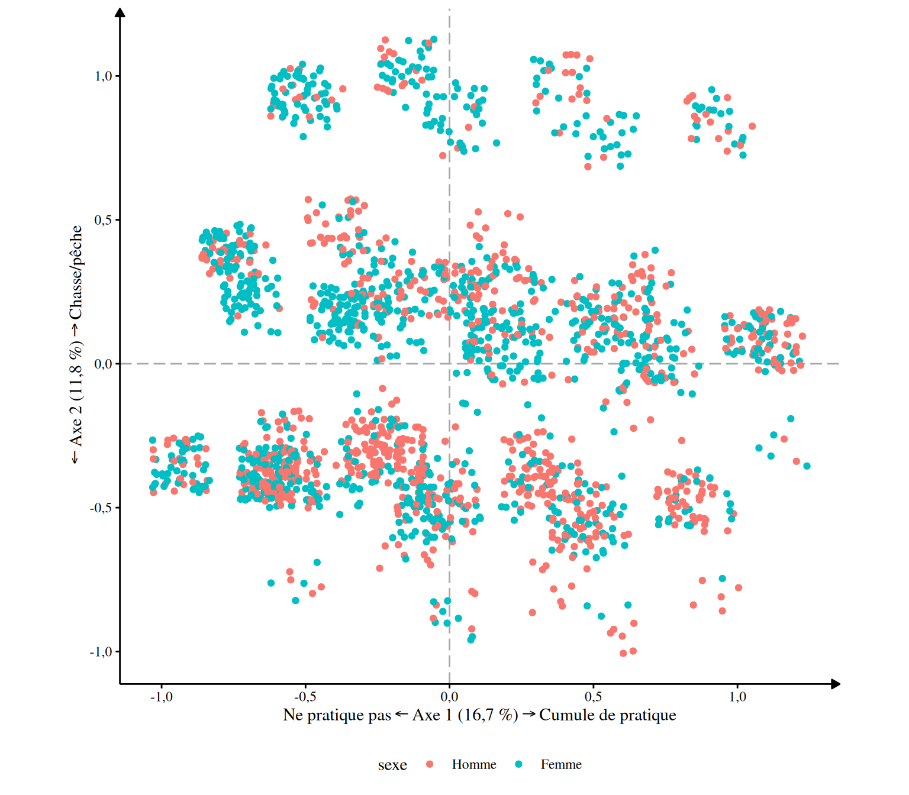
Ce type de représentation peut-être automatisé et répéter sur un grand nombre de modalités avec la fonction facet_wrap() de ggplot2. La fonction est un peu compliquée. Il faut procéder en plusieurs étapes.
D’abord, il faut sélectionner les modalités que l’on souhaite afficher. Ici, je vais prendre les 5 modalités qui contribuent le plus à l’axe 1. On pourrait utiliser d’autres critères cela dit (liste personnalisée, toutes les modalités qui ont une contribution supérieur à un seuil, etc.)
modalites_a_representer <- modalités |> # tableau des modalités
arrange(desc(dim1_contrib)) |> # trié de la contribution à l'axe 1 la plus grande
head(5) |> # on garde les 5 premières lignes
pull(modalites) # on extrait la colonne avec le nom des modalités.
modalites_a_representer
#> [1] "Pratique un sport" "Va au cinéma"
#> [3] "Ne va pas au cinéma" "Ne pratique pas de sport"
#> [5] "Bricole"Une fois cette liste prise on va créer un jeu de données qui recensera, pour chaque graphique, la liste des individus à mettre en valeur.
individus_concernés <- individus |>
pivot_longer(
cols = !starts_with("dim"),
names_to = "variable",
values_to = "modalite",
values_transform = as.character) |>
filter(modalite %in% modalites_a_representer) |>
mutate(
modalite = fct(modalite, levels = modalites_a_representer)
)
individus_concernés |>
select(modalite, dim1_coord, dim2_coord)
#> # A tibble: 4.853 × 3
#> modalite dim1_coord dim2_coord
#> <fct> <dbl> <dbl>
#> 1 Ne va pas au cinéma -0.308 0.152
#> 2 Ne pratique pas de sport -0.308 0.152
#> 3 Va au cinéma 0.526 -0.576
#> 4 Pratique un sport 0.526 -0.576
#> 5 Ne va pas au cinéma -0.00599 -0.446
#> 6 Pratique un sport -0.00599 -0.446
#> 7 Bricole 1.06 0.0914
#> 8 Va au cinéma 1.06 0.0914
#> 9 Pratique un sport 1.06 0.0914
#> 10 Ne va pas au cinéma -0.932 -0.348
#> # ℹ 4.843 more rowsCe tableau recense pour chaque modalité, toutes les coordonnées des individus concernés.
On peut ensuite construire le graphique couche par couche à partir de notre nouveau tableau. On l’initialise comme d’habitude avec ggacm(). Puis, on indique à ggplot qu’on souhaitera produire un graphique différent pour chaque modalités avec facet_wrap(~ modalite). L’argument labeller est ici pour faire sauter une ligne dans les labels au cas où le texte d’une modalité serait trop grand.
On peut ensuite commencer à construire le graphique qui sera répété. On commence par une première couche de points (geom_point()) qui reproduit le nuage d’individus en gris pour se repérer. Cette couche fait appel au nuage de tous les individus, on précise donc qu’on veut utiliser ce tableau (et pas celui des individus_concernéscomme ce sera le cas dans le reste du graphique) avec data = individus.
On rajoute dessus une deuxième couche de carrés rouges, qui s’imprimera au dessus de la couche précédente uniquement pour les individus concernés.
Quand on lance la fonction ggplot va refaire ce travail, pour chaque modalité sur un graphique différent, avant de les “coller” ensemble.
individus_concernés |>
ggacm() +
facet_wrap(
~ modalite, # <-- = répéter pour chaque modalités
labeller = labeller(modalites = label_wrap_gen(width = 20))
)+
geom_point(
data = individus, # <--- Important !
color = "darkgrey",
show.legend = FALSE
) +
geom_point(
color = "red",
shape = "square",
size = 2 # pour qu'ils recouvrent complètmeent les points gris.
) +
theme_acm() +
axes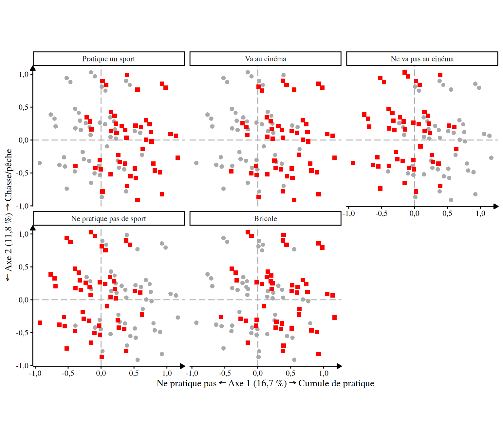
Pour plus de détails sur facet_wrap(), voir la section dédiée du [manuel](https://ggplot2-book.org/facet.html#sec-facet-wrap.
Classification
On peut gérer avec un processus similaire les classifications. On commence par réaliser la classification et la stocker dans un objet dédiée : res_cah.
res_cah <- res_acm |>
FactoMineR::HCPC(nb.clust = 3, graph = FALSE)Pour obtenir le dendrogramme :
res_cah |> plot(choice = "tree")
De manière similaire à avant, on commence par extraire les résultats de la CAH de res_cah. La fonction extraire_classes() renvoie notre tableau de données initiale auquel a été rajouté une colonne classe contenant la classe attributé par l’algorithme à cet individus.
individus_classés <- extraire_classes(res_cah)
individus_classés
#> # A tibble: 2.000 × 23
#> classe dim1_coord dim2_coord id sexe cuisine bricol cinema relig sport
#> <fct> <dbl> <dbl> <int> <fct> <fct> <fct> <fct> <fct> <fct>
#> 1 2 -0.308 0.152 5 Femme Ne fait p… Ne br… Ne va… Prat… Ne p…
#> 2 2 0.526 -0.576 24 Femme Ne fait p… Ne br… Ne va… Prat… Ne p…
#> 3 2 -0.00599 -0.446 39 Femme Ne fait p… Ne br… Ne va… Prat… Ne p…
#> 4 2 1.06 0.0914 45 Femme Ne fait p… Ne br… Ne va… Prat… Ne p…
#> 5 2 -0.932 -0.348 53 Homme Ne fait p… Ne br… Ne va… Prat… Ne p…
#> 6 2 0.526 -0.576 78 Femme Ne fait p… Ne br… Ne va… Prat… Ne p…
#> 7 2 -0.389 0.178 83 Femme Ne fait p… Ne br… Ne va… Prat… Ne p…
#> 8 2 0.0619 0.239 159 Homme Ne fait p… Ne br… Ne va… Prat… Ne p…
#> 9 2 -0.0985 -0.507 246 Homme Ne fait p… Ne br… Ne va… Prat… Ne p…
#> 10 2 0.312 0.213 266 Femme Ne fait p… Ne br… Ne va… Prat… Ne p…
#> # ℹ 1.990 more rows
#> # ℹ 13 more variables: dim3_coord <dbl>, dim4_coord <dbl>, dim5_coord <dbl>,
#> # dim1_contrib <dbl>, dim2_contrib <dbl>, dim3_contrib <dbl>,
#> # dim4_contrib <dbl>, dim5_contrib <dbl>, dim1_cos2 <dbl>, dim2_cos2 <dbl>,
#> # dim3_cos2 <dbl>, dim4_cos2 <dbl>, dim5_cos2 <dbl>Pour faire le graphique des individus selon la classe, on peut tout simplement reprendre le code du nuage des individus en précisant qu’il faudra donner une couleur selon la variable qui code la classe.
La palette par défaut de ggplot n’est pas très lisible, contrairement à la palette Dark2 de Color Brewer.
individus_classés |>
ggacm() +
aes(color = classe) + # <------
geom_point(aes(shape = classe)) +
axes +
scale_color_brewer(palette = "Dark2") + # (change la palette de couleur)
theme_acm()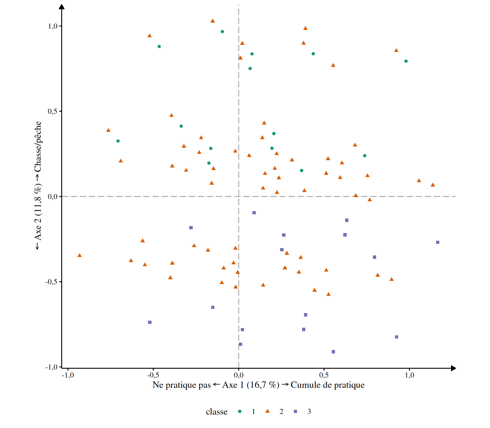
On pourra revenir à ce graphique une fois qu’on aura caractérisé les classes pour leur donner un nom par exemple. Dans ce cas là, on recode la colonne classe du tableau individus_classés en utilisant la fonction fct_recode() de forcats. La classe 1 est recodée en [Nom de classe], idem pour la 2 et la 3…
individus_classés<- individus_classés |>
mutate(
classe = classe |>
fct_recode(
"[Nom de classe]" = "1",
"[Autre nom de classe]" = "2",
"[Les autres]" = "3"
)
)
individus_classés
#> # A tibble: 2.000 × 23
#> classe dim1_coord dim2_coord id sexe cuisine bricol cinema relig sport
#> <fct> <dbl> <dbl> <int> <fct> <fct> <fct> <fct> <fct> <fct>
#> 1 [Autre n… -0.308 0.152 5 Femme Ne fai… Ne br… Ne va… Prat… Ne p…
#> 2 [Autre n… 0.526 -0.576 24 Femme Ne fai… Ne br… Ne va… Prat… Ne p…
#> 3 [Autre n… -0.00599 -0.446 39 Femme Ne fai… Ne br… Ne va… Prat… Ne p…
#> 4 [Autre n… 1.06 0.0914 45 Femme Ne fai… Ne br… Ne va… Prat… Ne p…
#> 5 [Autre n… -0.932 -0.348 53 Homme Ne fai… Ne br… Ne va… Prat… Ne p…
#> 6 [Autre n… 0.526 -0.576 78 Femme Ne fai… Ne br… Ne va… Prat… Ne p…
#> 7 [Autre n… -0.389 0.178 83 Femme Ne fai… Ne br… Ne va… Prat… Ne p…
#> 8 [Autre n… 0.0619 0.239 159 Homme Ne fai… Ne br… Ne va… Prat… Ne p…
#> 9 [Autre n… -0.0985 -0.507 246 Homme Ne fai… Ne br… Ne va… Prat… Ne p…
#> 10 [Autre n… 0.312 0.213 266 Femme Ne fai… Ne br… Ne va… Prat… Ne p…
#> # ℹ 1.990 more rows
#> # ℹ 13 more variables: dim3_coord <dbl>, dim4_coord <dbl>, dim5_coord <dbl>,
#> # dim1_contrib <dbl>, dim2_contrib <dbl>, dim3_contrib <dbl>,
#> # dim4_contrib <dbl>, dim5_contrib <dbl>, dim1_cos2 <dbl>, dim2_cos2 <dbl>,
#> # dim3_cos2 <dbl>, dim4_cos2 <dbl>, dim5_cos2 <dbl>On peut ensuite refaire ensuite le graphique en affichant le nom des classes :
individus_classés |>
ggacm() +
aes(color = classe)+
geom_point(aes(shape = classe)) +
axes +
scale_color_brewer(palette = "Dark2") + # (change la palette de couleur)
theme_acm()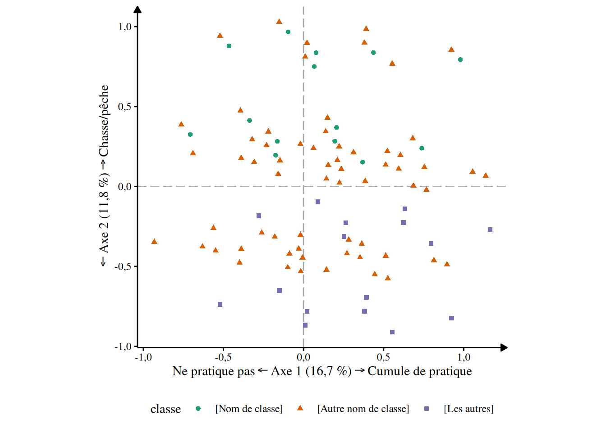
Tableau de description
Les tableaux de description de positions des membres des classes sur les différents axes peuvent être accessible comme ceci :
res_cah$desc.axes$quanti |>
map(\(x) x |> as.data.frame() |> round(digits = 2))
#> $`1`
#> v.test Mean in category Overall mean sd in category Overall sd p.value n
#> Dim 5 35,66 2,50 0 0,00 0,45 0 40
#> Dim 4 24,16 1,70 0 0,08 0,45 0 40
#> Dim 2 7,92 0,57 0 0,30 0,46 0 40
#> Dim 3 4,19 0,30 0 0,17 0,45 0 40
#>
#> $`2`
#> v.test Mean in category Overall mean sd in category Overall sd p.value
#> Dim 2 5,66 0,02 0 0,45 0,46 0,00
#> Dim 5 -2,56 -0,01 0 0,19 0,45 0,01
#> Dim 1 -3,38 -0,01 0 0,55 0,55 0,00
#> Dim 3 -16,26 -0,04 0 0,43 0,45 0,00
#> Dim 4 -40,49 -0,11 0 0,19 0,45 0,00
#> n
#> Dim 2 1867
#> Dim 5 1867
#> Dim 1 1867
#> Dim 3 1867
#> Dim 4 1867
#>
#> $`3`
#> v.test Mean in category Overall mean sd in category Overall sd p.value n
#> Dim 4 31,84 1,45 0 0,09 0,45 0 93
#> Dim 3 16,45 0,75 0 0,20 0,45 0 93
#> Dim 1 4,31 0,24 0 0,48 0,55 0 93
#> Dim 2 -11,96 -0,56 0 0,30 0,46 0 93
#> Dim 5 -20,67 -0,94 0 0,00 0,45 0 93On peut ensuite, pour chaque classe, décrire finement la composition de celle-ci ainsi que sa place dans la population globale :
caracteriser_classe(res_cah, 1)| Modalités |
Composition de la classe N = 401 |
Dans l’ensemble N = 20002 |
Part des membres de la classe3 | V-Test | P-Valeur |
|---|---|---|---|---|---|
| Caractéristiques typiques | |||||
| NSP ou NVPR | 40 (100 %) | 40 (2 %) | 40/40 (100 %) | 19,50 | <0,001 |
| Caractéristiques atypiques | |||||
| Appartenance sans pratique | 0 (0 %) | 760 (38 %) | 0/760 (0 %) | -5,89 | <0,001 |
| Pratiquant occasionnel | 0 (0 %) | 442 (22 %) | 0/442 (0 %) | -4,10 | <0,001 |
| Ni croyance ni appartenance | 0 (0 %) | 399 (20 %) | 0/399 (0 %) | -3,84 | <0,001 |
| Pratiquant regulier | 0 (0 %) | 266 (13 %) | 0/266 (0 %) | -2,96 | 0,003 |
| 1 Nombre et part des membres de la classe partageant la modalité | |||||
| 2 Nombre et part des membres de l’ensemble des individus partageant la modalité | |||||
| 3 Part des membres de la classe au sein des individus partageant la même modalité | |||||
caracteriser_classe(res_cah, 2)| Modalités |
Composition de la classe N = 18671 |
Dans l’ensemble N = 20002 |
Part des membres de la classe3 | V-Test | P-Valeur |
|---|---|---|---|---|---|
| Caractéristiques typiques | |||||
| Appartenance sans pratique | 760 (41 %) | 760 (38 %) | 760/760 (100 %) | 11,29 | <0,001 |
| Pratiquant occasionnel | 442 (24 %) | 442 (22 %) | 442/442 (100 %) | 8,03 | <0,001 |
| Ni croyance ni appartenance | 399 (21 %) | 399 (20 %) | 399/399 (100 %) | 7,55 | <0,001 |
| Pratiquant regulier | 266 (14 %) | 266 (13 %) | 266/266 (100 %) | 5,94 | <0,001 |
| Ne va pas au cinéma | 1110 (59 %) | 1174 (59 %) | 1110/1174 (95 %) | 2,54 | 0,011 |
| Caractéristiques atypiques | |||||
| Rejet | 0 (0 %) | 93 (5 %) | 0/93 (0 %) | -24,12 | <0,001 |
| NSP ou NVPR | 0 (0 %) | 40 (2 %) | 0/40 (0 %) | -14,94 | <0,001 |
| Va au cinéma | 757 (41 %) | 826 (41 %) | 757/826 (92 %) | -2,54 | 0,011 |
| 1 Nombre et part des membres de la classe partageant la modalité | |||||
| 2 Nombre et part des membres de l’ensemble des individus partageant la modalité | |||||
| 3 Part des membres de la classe au sein des individus partageant la même modalité | |||||
caracteriser_classe(res_cah, 3)| Modalités |
Composition de la classe N = 931 |
Dans l’ensemble N = 20002 |
Part des membres de la classe3 | V-Test | P-Valeur |
|---|---|---|---|---|---|
| Caractéristiques typiques | |||||
| Rejet | 93 (100 %) | 93 (5 %) | 93/93 (100 %) | 27,18 | <0,001 |
| Va au cinéma | 52 (56 %) | 826 (41 %) | 52/826 (6 %) | 2,89 | 0,004 |
| Homme | 52 (56 %) | 899 (45 %) | 52/899 (6 %) | 2,16 | 0,031 |
| Caractéristiques atypiques | |||||
| Appartenance sans pratique | 0 (0 %) | 760 (38 %) | 0/760 (0 %) | -9,31 | <0,001 |
| Pratiquant occasionnel | 0 (0 %) | 442 (22 %) | 0/442 (0 %) | -6,59 | <0,001 |
| Ni croyance ni appartenance | 0 (0 %) | 399 (20 %) | 0/399 (0 %) | -6,19 | <0,001 |
| Pratiquant regulier | 0 (0 %) | 266 (13 %) | 0/266 (0 %) | -4,85 | <0,001 |
| Ne va pas au cinéma | 41 (44 %) | 1174 (59 %) | 41/1174 (3 %) | -2,89 | 0,004 |
| Femme | 41 (44 %) | 1101 (55 %) | 41/1101 (4 %) | -2,16 | 0,031 |
| 1 Nombre et part des membres de la classe partageant la modalité | |||||
| 2 Nombre et part des membres de l’ensemble des individus partageant la modalité | |||||
| 3 Part des membres de la classe au sein des individus partageant la même modalité | |||||